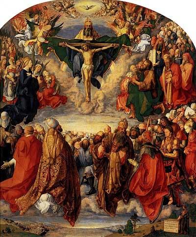

Sacred Texts Christianty
Buy this Book at Amazon.com
|

Adoration of the Trinity, Alberecht Duerer [1511] (Public Domain Image) |
Pageant of the Popesby John Farrow[1942] |
This book contains a continuous history of the Papacy from the first century up to the mid-20th, when it was written. The original book has no chapter heads: the breakdown by century was added here. Farrow names every pope and provides extensive background on them. There are good popes, not a few bad popes, anti-popes (at one time there were three claimants to the throne), some popes who reigned less than a week, and numerous popes of humble origin.
The author is not afraid to confront the low points of papal history. Some of the medieval popes lived like Asian despots, and even had harems of concubines. The Renaissance popes, particularly the Borgias, raised nepotism to a high art, while they brought high art into the Vatican. In the 20th century successive Popes made open pacts with both Mussolini and Hitler. Farrow, a devout and very conservative Catholic, points out that the institution has endured and grown for two millennia, in spite of the uneven quality of the popes themselves.
The book is full of interesting facts. For instance, the pope was not declared infallible until a conclave in 1869. Napoleon imprisoned Pius VI, and almost got him to sign over the Vatican to France. There was only one English pope, Adrian IV, but quite a few French pontiffs. There were a number of popes who were related, including fathers and sons. Also of note is a useful chronological table at the end which lists every pope from St. Peter to Pius XII.
Production notes: The illustrations from this book were damaged by cumulative exposure to environmental light (in the parlance of book dealers, it was 'sunned'). I have attempted to bring out the details in them by image processing. These are the best available images. --J. B. Hare, 12 Mar 2008.